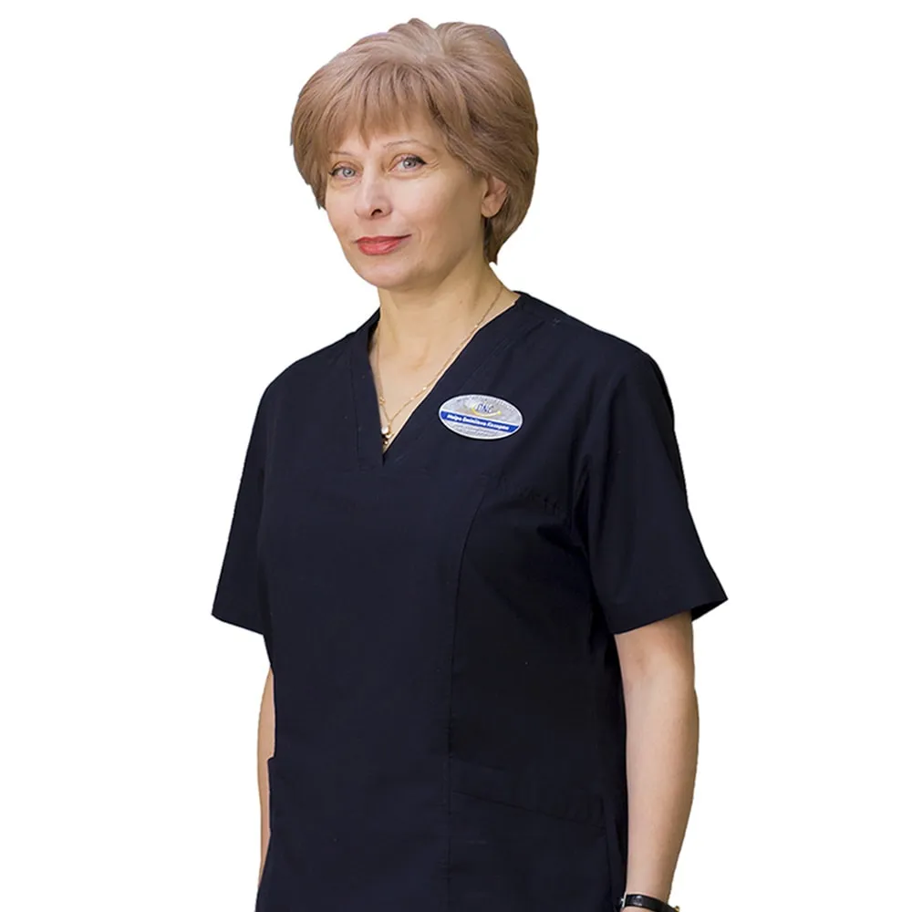
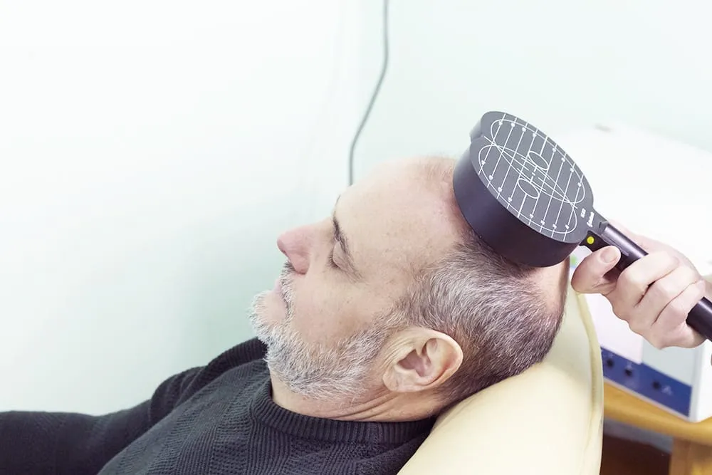
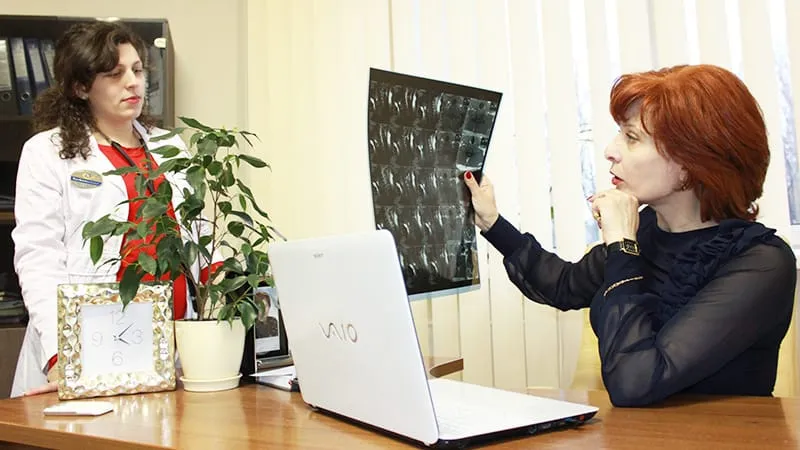
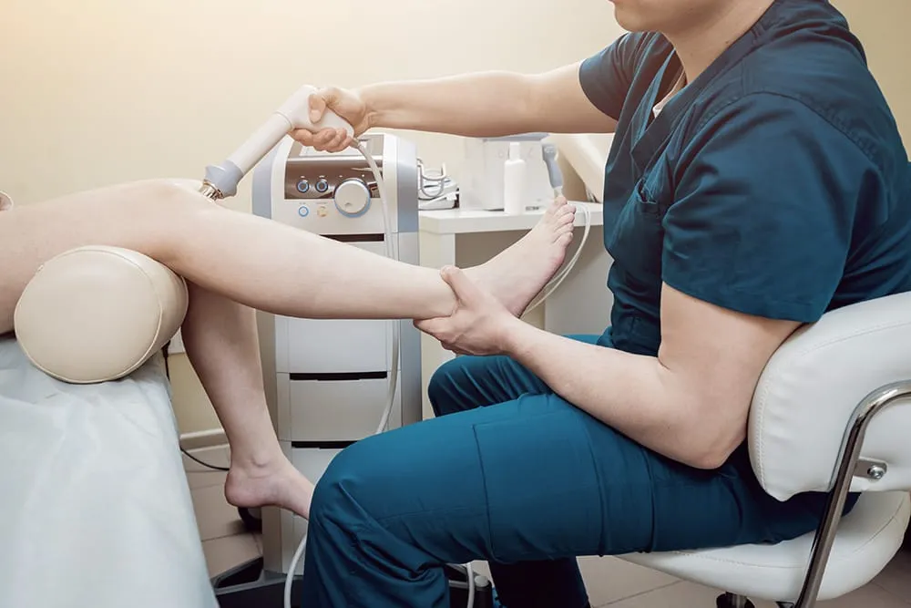
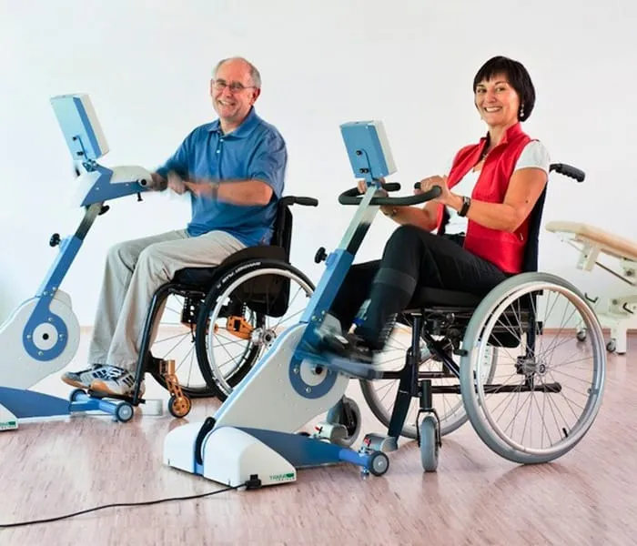
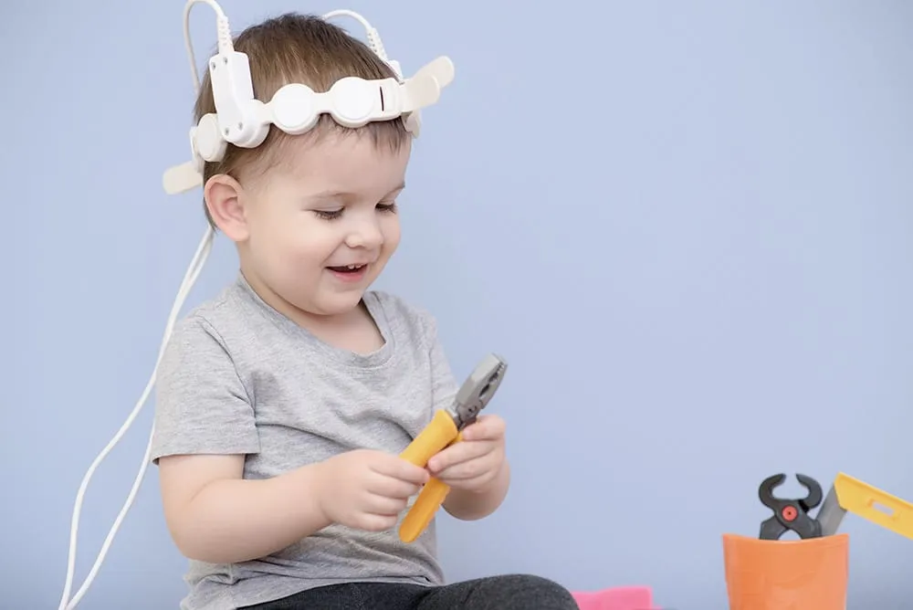
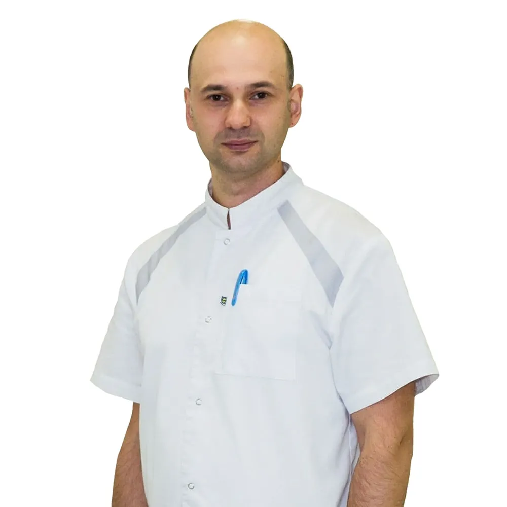
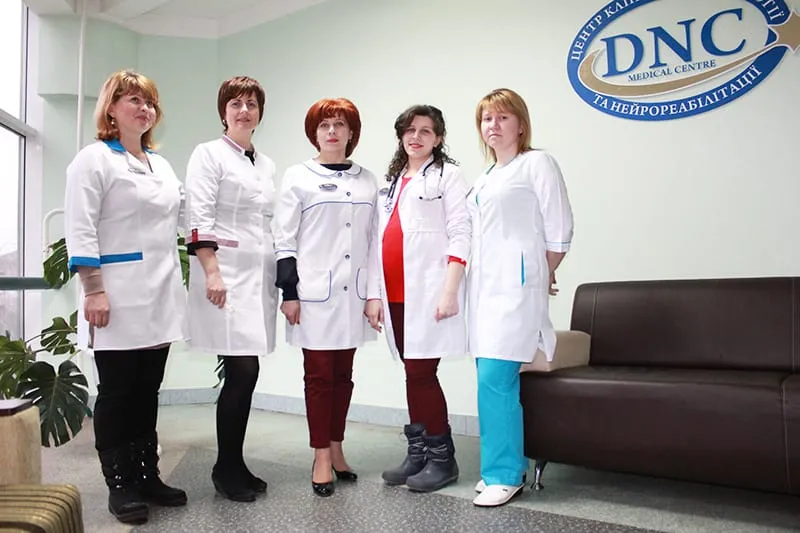

Казарян Наіра Емілівна
Лікар-невролог вищої категорії, нейрофізіолог
Про лікаря (Розділ у розробці)Центр клінічної неврології та нейрореабілітації
Діагностуємо й лікуємо дорослих і дітей із захворюваннями головного і спинного мозку, периферичних нервів і м'язів. Працюємо з 2004 року — зокрема з тими діагнозами, за які беруться рідко.

Що ми лікуємо
Невролог починає з питання, на якому рівні нервової системи порушення. Ми згрупували захворювання так само — і показали, якими методами працюємо на кожному рівні.
Судинні захворювання, наслідки інсульту й травм, нейродегенеративні та демієлінізуючі захворювання.
Спинальні травми, судинні та спадкові захворювання, рухові порушення і біль у спині.
Неврити, радикуліти, плексити та полінейропатії різного походження, зокрема спадкові.
Спадкові нервово-м'язові захворювання та рухові порушення, больові синдроми.
Як ми працюємо

01Діагностика
Невролог проводить ретельний огляд, визначає потрібні дослідження, аналізує результати й пояснює тактику лікування.

02Лікування
Поєднання методів підбирають під діагноз — зокрема для «запущених» форм і захворювань, що важко піддаються лікуванню.

03Реабілітація
Авторська методика реабілітації тяжких опорно-рухових порушень і кінезотерапія у власному залі.
Метод і наука
ТМС дозволяє виявити особливості структурного і функціонального пошкодження головного і спинного мозку. У лікуванні вона підвищує функціональну активність кори, покращує обмін речовин і кровообіг, сприяє відновленню зв'язків у нервовій системі.
Лікарка-невролог і нейрофізіолог центру Наіра Казарян — авторка наукових публікацій і доповідей про ТМС у діагностиці розсіяного склерозу, хвороб рухового нейрона, наслідків інсульту й черепно-мозкової травми.

Дитяча неврологія
Успішно відновлюємо функції головного мозку при затримці психомоторного і мовного розвитку, відновлюємо втрачені функції при ДЦП і спинномозкових грижах, лікуємо гіперкінези та гіперактивність.
Складні діагнози
За даними центру, комплексний підхід дав результати у відновленні пацієнтів із такими захворюваннями. До центру звертаються й пацієнти з тяжкими спінальними травмами з інших країн.
Лікарі
Консультації та діагностику проводять досвідчені неврологи вищої категорії, співробітники кафедри неврології.

Лікар-невролог вищої категорії, нейрофізіолог
Про лікаря (Розділ у розробці)
Лікар-невролог, нейрофізіолог
Про лікаря (Розділ у розробці)
Як потрапити
Ми розповімо, які дослідження потрібні саме у вашому випадку, і підберемо зручний час.
ltd.dnc@gmail.com